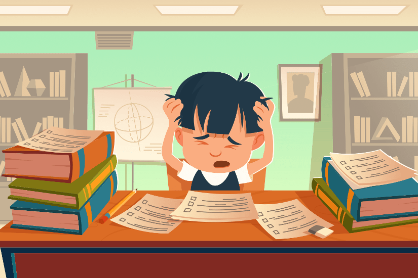

What is Study/Academic Pressure on students?

Academic pressure is the stress experienced by students because of their inability to perform well enough in school or their fear that they will be unable to perform well enough in school. The four components of academic pressure are:
- Academic frustration- leading to children giving up on studying and doing badly in exams
- Academic conflicts – this happens when children are forced to study against their will
- Academic anxieties – the fear of exams
- Academic pressures – The feeling of being overwhelmed by a large syllabus.
Causes of Pressure
- Parental Expectations
- Fear of failure
- Forced to study specific subjects in which student is not interested
- Issue with time management
- Overthinking
Next Page
Previous page